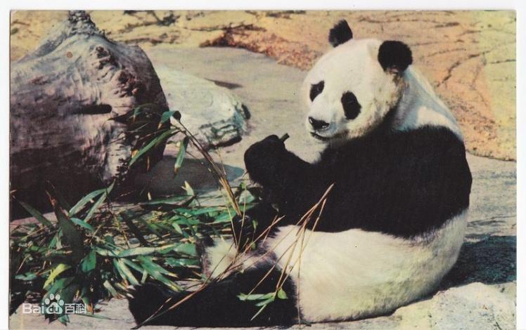

熊猫外交:
熊猫外交是指中国大陆通过赠送或巡展与商业性租借熊猫，来开展外交工作。
熊猫是中国的国宝。它曾经多次出国担任友好使者，为发展对外友好关系作出了不可磨灭的贡献。
唐朝武则天赠给日本天武天皇2只“白熊”和70张毛皮。最著名的“熊猫外交”发生在1972年，成就了中美外交上的一段蜜月时光。这年2月，美国总统尼克松来中国访问，周恩来总理宣布赠送给美国人民的一件隆重的国礼，这就是来自四川省宝兴县的大熊猫“玲玲”和“兴兴”。当年4月26日，当“玲玲”和“兴兴”乘专机从北京抵达华盛顿国家动物园时，受到8000名美国观众的冒雨迎接，开馆与观众见面第一个月，参观者就多达100余万。
从1957年到1982年的26年间，中国一共赠送给9个国家23只大熊猫。是中国在向境外赠送或租借大熊猫借以增进友好关系的外交方式。
发展历程
古代
在唐朝武则天、唐玄宗时期，它就作为礼物随着日本的使者跨越重洋。
据日本《皇家年鉴》记载，早在武后垂拱元年（685年），临朝称制的太后武则天就曾送给日本天武天皇两只“白熊”和70张“白熊”毛皮。
据大熊猫专家胡锦矗考证，此“白熊”即今之大熊猫。
今代
大熊猫一直被称为中国的“友好大使”，积极促进了中国与外国的友谊和相互了解。从这个意义上说，大熊猫一直是个政治工具。
1936年至1945年，中国国民政府向西方国家赠送了14只熊猫。1941年，蒋介石、宋氏姐妹和国民党诸多高官正式向美国联合救济中国难民协会捐献了一对熊猫。中华民国国民政府于1946年向英国政府赠送了大熊猫一只，正式开始了大熊猫作为国礼出国的历程。
新中国以后：
新中国成立后，熊猫去处更是反映了当时的中国外交政策：在向苏联一边倒的1950年代，中国向苏联赠送了两只熊猫；在1960年代，熊猫受到冷落，除了向朝鲜赠送之外，没有向任何其他国家赠送。到了中美关系解冻的1970年代，熊猫突然在西方走红，美国（1972年）、日本（1972年）、法国（1973年）、英国（1974年）、西德（1974年）、墨西哥（1975年）和西班牙（1978年）相继获赠大熊猫。
1982年之后，鉴于大熊猫生态环境恶化导致其数量急剧减少，中国停止了向外国赠送大熊猫的做法。1984年，随着经济改革开放，大熊猫与时俱进，摘下了“友好大使”的面具，戴上“商务参展”的头衔，投入中国的现代化建设中，开启了著名的“熊猫租借”方案。根据这个方案，中国短期内向外国动物园租借大熊猫，对方支付租金。一时间，大熊猫成了财大气粗的创汇大户，国内相关部门争相出口，造成大量捕捉大熊猫，导致管理混乱失调，严重影响了大熊猫的保护。
特使之最
出访最早的特使“白熊”
熊猫作为“大使”出使国外的历史最早可以追溯到唐朝。据日本史料记载，早在公元685年，武则天就曾赠送给日本天武天皇两只“白熊”和70张毛皮。据有关专家考证，所谓“白熊”应该指的就是大熊猫，因为当时长安皇苑内就有大熊猫。这是已知的史书记载的第一次大熊猫出使记。
桃花运最差的特使“宝宝”
德国柏林动物园的大熊猫“宝宝”可以算得上所有熊猫使节中最年长的一只，2009年它已经31岁了，相当于人类的90岁高龄。“宝宝”也被认为是“桃花运”最差的熊猫。当初，和它一起来到德国的雌性大熊猫“天天”早早夭折。后把“宝宝”送到英国伦敦动物园，与雌性熊猫“明明”相亲，但两只熊猫见面就大打出手，好事没成，还几乎酿成“命案”。
1997年，德国以每年6万美元的价格从中国租来了比“宝宝”小5岁的雌性大熊猫“艳艳”，动物园连续8年尝试人工授精，但均告失败。2007年，“艳艳”死于急性肠道堵塞，剩下形单影只的“宝宝”孤独的安享晚年。
最贪吃的特使夫人“艳艳”
和“宝宝”是“半路夫妻”的“艳艳”在柏林动物园生活了12年。据德国媒体报道，“艳艳”爱喝酒，爱吃甜食，尤其是巧克力。2007年，“艳艳”在毫无征兆的情况下死去，经解剖认定为急性肠道堵塞。在它故去当天，还有来参观的德国小朋友带来了它最爱喝的小瓶装德国产烈性酒。
早在1997年陕西省珍稀野生动物抢救饲养研究中心回访“艳艳”时，就发现它的食物里有大量白糖，并在配膳室发现一大桶糖，柏林动物园工作人员解释说是掺在饲料中喂给“艳艳”的，因为它喜欢甜食。
最棘手的特使 “佳佳”和“晶晶”
1974年，英国首相争取来一对大熊猫“佳佳”和“晶晶”，但这对熊猫的到来却让当时的伦敦动物园犯了难。
一是熊猫所吃的竹子需要进口，价格很贵，已经濒临破产的动物园负担不起。再加上盖熊猫笼舍需要约7万英镑和其他费用，对于动物园来说都是沉重的负担。动物园只能尽其所能，将大熊猫照顾到最好。
“晶晶”故去后，“佳佳”被租借给墨西哥查普特佩克动物园直到终老。
最有范儿的特使 “兰兰”和“康康”
1972年9月25日，田中角荣和大平正芳率日本政府代表团到北京同中国举行两国建交谈判。两国签署共同声明后，毛主席和周总理答应将宝兴大熊猫“兰兰”和“康康”赠送给日本人民。
1972年10月8日，当“兰兰”和“康康”乘坐的专机飞入日本领空时，几架日本自卫队战斗机立刻升空，护航到东京。内阁大臣二阶堂进官房长官亲自带队迎接中国的“和平使者”。在严密的警戒中，这对大熊猫由先导车开道直达上野动物园。经过一周的身体检查并适应了东京的秋风之后，才正式露面。
最著名的特使“姬姬”
要说全球最具知名度的熊猫大使，无论是美国的“玲玲”和“兴兴”，还是日本的“兰兰”和“康康”都无法与之相提并论。
这只熊猫的名字叫“姬姬”，是奥地利动物商海尼·德默于1958年以三只长颈鹿、两只犀牛以及河马、斑马等，与北京动物园换得的一只雌性大熊猫，后来生活在伦敦动物园。它是世界自然基金会会徽上那只大熊猫的原型，这个标识在全世界已经无人不知，无人不晓了。

熊猫外交的评价：
中国从一开始的赠送大熊猫，到后来的租借合作研究，看到大熊猫作为使者去出访，其实也刚好是中国外交逐步的走向自信和成熟的一个过程的一个缩影，“熊猫外交”是中国行使软实力的一种方式，熊猫其实已经逐渐成为西方媒体比喻中国的动物。而中国人自己，也把熊猫和这种隐喻当成了文化、价值观的重要输出。大熊猫作为亲善大使，它走遍全世界，起到了人类的外交使节起不到的作用。极大的改善了中国和世界各国之间的关系。
这些大熊猫吸引了许多人的关注。它们是动物保护事业的象征，并且可以提升动物园的品牌。同时使得与其他国家共同照顾这种珍贵动物的举动巩固了中国与友邦之间的关系。
熊猫外交的意义：
华春莹：大熊猫呆萌可爱、憨态可掬，不仅是中国的“国宝”，也深受世界各国人民的欢迎和喜爱，是中国和外国友谊的使者和桥梁，推动了中外文化交融和人文交流。同时，大熊猫作为野生动植物保护领域的旗舰物种，在推进全球生物多样性保护方面也发挥了积极作用。目前，中国与日本、美国、奥地利、泰国、西班牙、澳大利亚、英国、法国、新加坡、比利时、马来西亚、韩国、荷兰、德国、印尼、芬兰、丹麦、俄罗斯等18个国家的22个动物园开展大熊猫保护合作研究，这些保护合作研究促进了中外在濒危物种保护领域的学术交流，提升了保护科研水平，强化了物种保护。